Indyspot AI Corp · Engineering Manager · 2026-10-19
Section 01
이번 주에 바뀐 규칙과, 사용자·운영자가 직접 체감하는 변화, 그리고 어디까지 운영에 반영됐는지를 먼저 정리합니다.
영문 상호는 Indyspot Inc. 로 통일했습니다(Indispot 아님). 책임자 연락처는 회사 대표 연락처(070-7518-3600 · indyspot.kr@gmail.com)로 일원화합니다.
YouTube 임베드는 사용자 화면 전체를 youtube-nocookie.com 으로 통일했습니다(재생하지 않은 방문자에게 YouTube 쿠키를 심지 않음).
youtube-nocookie.com
같은 「완료」라도 반영된 지면이 다릅니다. 회의에서 운영 배포 여부를 판단할 때 이 표를 기준으로 봐 주십시오.
da7cee3a3
a86bdeb9c
87e4090d1
c84819c5d
8aa8d04..5e89b6a
9f813bf
운영 Netlify 에서 직접 확인한 결과, /sitemap.xml·라이선스 데이터 파일이 아직 없습니다. 이번 주 l3 플랫폼 사용자 화면 변경은 운영에 들어가지 않은 상태입니다.
/sitemap.xml
10/15 개발 서버와 자동화 작업을 mac2020 에서 사무실 데스크톱(kabkee-main, WSL)으로 옮겼습니다. 예전 주소는 더 이상 동작하지 않습니다.
http://100.64.25.50:5174
100.120.25.127:5174
http://100.64.25.50:5277
100.120.25.127:5277
http://100.64.25.50:3001/v1.0
100.120.25.127:3001
https://kabkee-main.tailfe017f.ts.net:8443
kabkee-macbookpro-2020…
https://kabkee-main.tailfe017f.ts.net:8444
지난주 덱의 링크는 예전 주소라 열리지 않습니다.
Section 02
약관을 레거시 운영 원문 그대로 다시 옮기고 7개 언어로 번역했으며, 사이트 화면의 남은 한국어를 전수 조사해 정리했습니다.
플랫폼 약관이 레거시 운영 약관을 요약해서 옮긴 것이었습니다(일치율 이용약관 0.37 · 개인정보 0.31). 원문 전체로 다시 옮기면서 책임자·연락처 개정을 함께 처리했습니다.
10/19 18:13 기준 look360.kr 공지사항에 개정 공지는 아직 게시되지 않았습니다. 오너 조건에 따라 공지가 확인되기 전에는 배포하지 않습니다.
공지 게시일이 곧 공고일(D) 입니다. 가안 공고일 10/16 은 공지 없이 지나갔으므로 실제 게시일로 다시 계산해야 합니다.
retarget-dates.py --D <게시일> --apply
한국어·영어뿐이던 약관·정책 8개 탭을 일본어·중국어(간체)·독일어·스페인어·러시아어로 번역했습니다. 회원가입 모달의 「보기」도 같은 번역을 씁니다.
법적 효력은 한국어 원문에 있으며, 번역본 첫머리에 그 고지가 붙습니다. 운영 배포는 약관 공지 게시 이후입니다.
사이트 언어를 일본어로 바꾸면 약관 탭 이름과 본문이 일본어로 나오고, 첫 줄에 「한국어 원문이 우선한다」는 고지가 붙습니다.
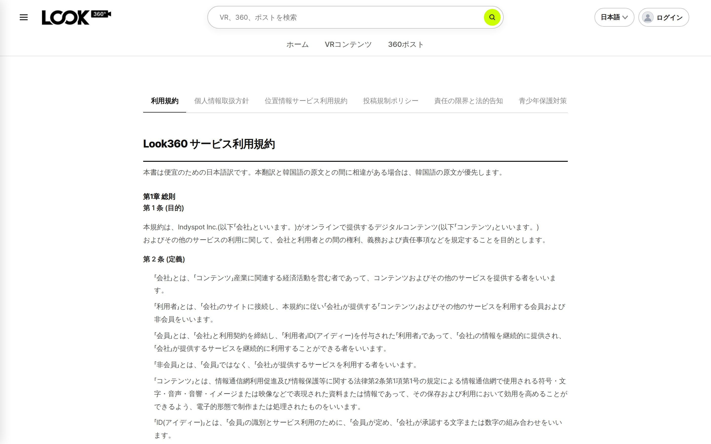
언어를 바꿔도 헤더·사이드패널에 한국어가 남는다는 오너 지적(10/14)에서 출발해, 화면 전체의 하드코딩 한국어를 전수 조사하고 고쳤습니다.
yarn lint
자동번역 확인 팝업은 「자동번역이 꺼져 있을 때만」 뜨도록 바꿨고, 바깥 클릭·ESC·새로 넣은 X 버튼은 모두 취소로 처리합니다. 예전 알림은 한국어로 남습니다(오너 결정).
사이트 다국어 작업은 화면 문구(메뉴·버튼·표 머리글·탭 제목·서버 오류)만 번역했습니다. FAQ(/faq)·공지사항(/notice)의 제목·본문은 DB 에 한국어로만 있어 언어를 바꿔도 한국어로 나옵니다.
/faq
/notice
함께 결정이 필요한 것: 중요 메일 다국어(한·영 병기 제안) · 번역 품질(「시작→startup」 등 어색한 기계 번역) 처리 방침.
Section 03
YouTube형 360동영상의 조작을 운영까지 반영했고, iPhone 실기 결과에 따라 지원 범위를 확정했습니다. VR 스토리에는 360동영상과 화질 선택이 들어갔습니다.
YouTube 임베드는 원래 손가락·마우스로 시점을 돌릴 수 없어, 위에 입력 레이어를 얹어 우회했습니다. 이번 주 오너 실기 후 운영(Netlify)에 반영했습니다.
ef619978
「드래그가 필요하면 업로드형으로」라는 임시 방침은 종료됐습니다. YouTube 영상에는 화질 메뉴가 없습니다(YouTube 가 화질 지정을 막음).
YouTube 자체 컨트롤·설정·공유 버튼이 사라지고, 업로드형 영상과 같은 재생·시크·음소거 바로 조작합니다. 화면 어디를 끌어도 시점이 돕니다.
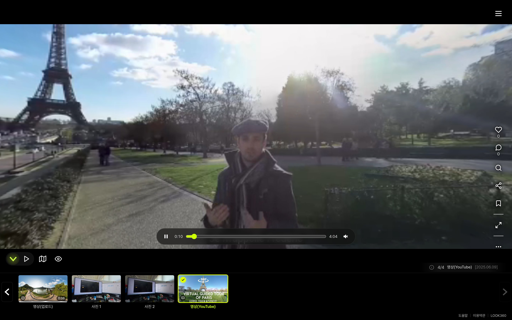
iPhone SE2 · iOS 27.0.1 에서 운영 화면의 「영상(YouTube)」 장면을 확인했습니다. 두 브라우저 모두 YouTube 가 구(球) 형태로 그리지 않아 돌릴 시점 자체가 없습니다.
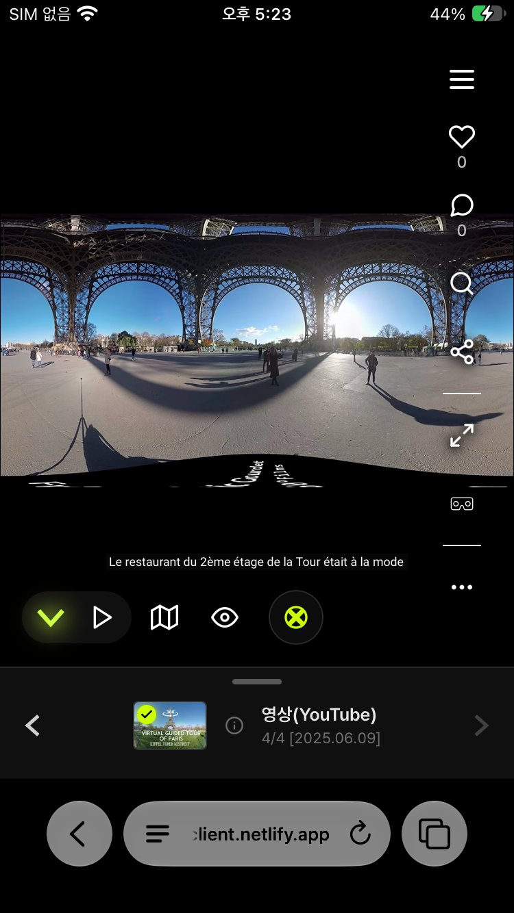
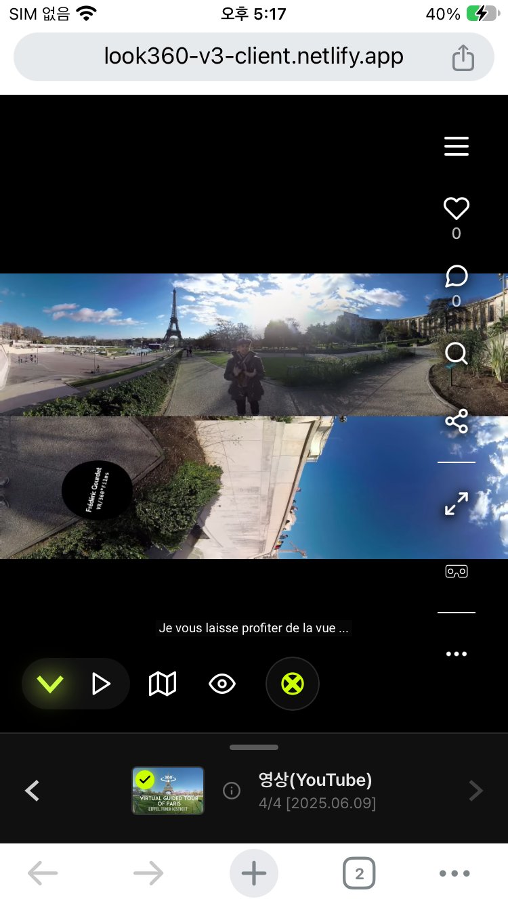
YouTube iframe 은 다른 사이트 영역이라 우리 코드로 영상 픽셀을 가져와 구에 입힐 수 없습니다. iOS Chrome 도 엔진이 WebKit 이라 같은 제약입니다.
에뮬레이션으로만 확인했습니다. 버튼이 iPhone 에서 실제로 YouTube 앱을 여는지는 오너 실기 확인이 필요합니다.
같은 장면을 iPhone 과 Android 화면 크기로 비교한 에뮬레이션 화면입니다. iPhone 에서만 배너가 뜨고 자이로 버튼이 빠집니다.
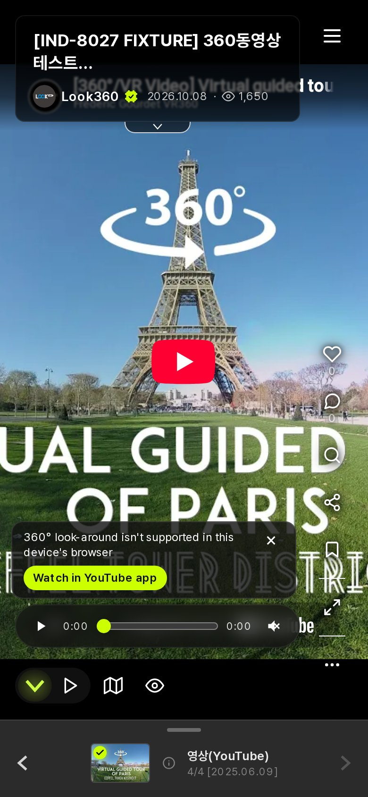
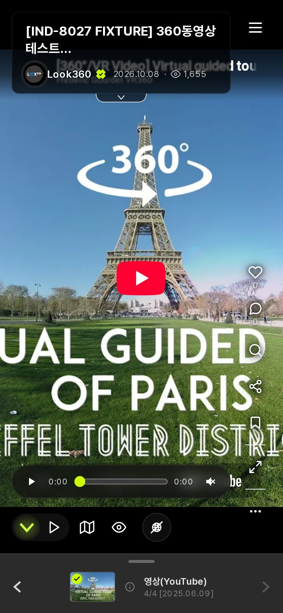
오너 요청(10/15): 「시청자가 재생 중에 화질을 고를 수 있고, 제작자는 업로드할 때 기본 화질을 정할 수 있어야 한다.」 그전에는 VR 스토리에 영상 장면을 넣을 방법 자체가 없었습니다.
운영 배포는 하지 않았습니다. 용량 기준: 영상 1편 3단 저장 시 1분 약 183MB · 5분 약 916MB(백업 포함 2배).
VR 스토리 하단 컨트롤바 오른쪽에 화질(1440p)이 표시되고, 누르면 1920/1440/960p 를 고를 수 있습니다. QC 때 넣었던 테스트 장면을 찍은 화면입니다(현재는 원복).
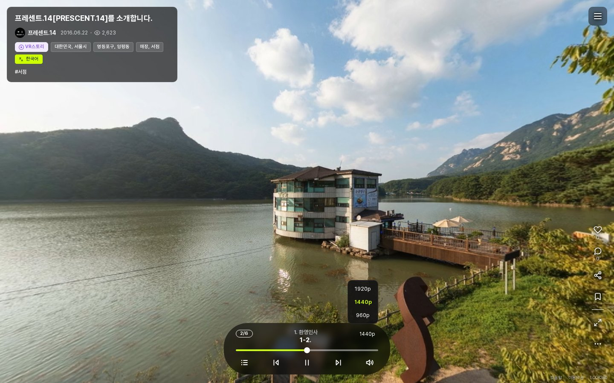
지난주 「전수 검사 대기」로 보고한 항목입니다. 스토리별로 고치지 않고, 영상·소리의 정지·진척·진행 버튼을 한 곳의 공통 장치가 맡도록 플랫폼 전체에 넓혔습니다.
남은 관찰(FAIL 아님): 모바일 390px 에서 자동 회전 때문에 썰매 아이콘이 화면 밖으로 나갈 수 있습니다. 스토리 고유 문제(uid 11 1-5·1-6)는 오너가 직접 수정합니다.
5-3 「썰매장 정상」 단계에서 상태바가 진행 중인 화면입니다. 나레이션이 끝나면 썰매 버튼이 뜨고 클릭을 기다립니다.
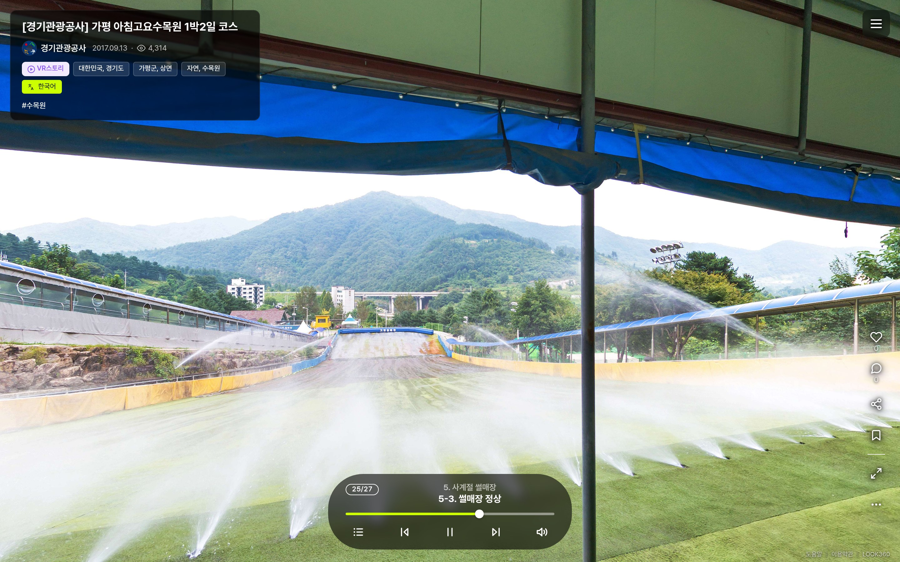
레거시 XML 은 CloudFront 가 주소 뒤 버전값을 무시해, 배포 후 약 15시간 옛 파일이 나갔습니다. 앞으로 레거시 XML 배포에는 캐시 무효화를 함께 합니다. 남한산성 개선 선택지 5개(클릭 시 회전 건너뛰기 등)는 보류 상태입니다.
Section 04
방문 이력 이전/다음 버튼을 VR 모드까지 완성했고, 뷰어 곳곳의 요청을 처리했습니다. 필터·썸네일 아이콘·AI 배지는 시안을 회의에서 고릅니다.
VR 화면 아래쪽에 「이전」「다음」 버튼과 파노라마 이름이 떠 있다가, 시선을 내릴수록 진해지고 고개를 돌리면 살짝 따라옵니다.
flat(평면) 장면에서는 이전/다음 버튼을 숨기는 것이 사양입니다. VR 스토리·자동 진행 중에도 버튼은 뜨지 않습니다.
A = 현행(라임 원 · 곡선 화살표 · 흰 글자+그림자) · B = 반투명 다크 원 · 꺾쇠 · 라벨 다크 pill · C = 화살표+이름 통합 라임 캡슐. 오너 1차 의견: A안이 가장 좋아 보임.
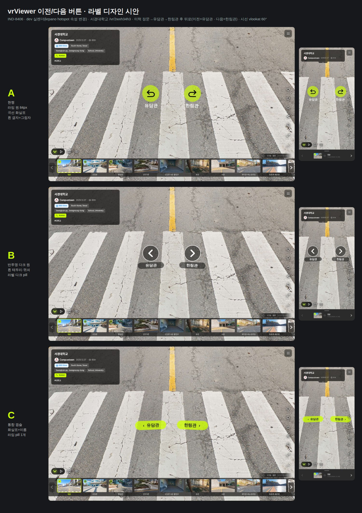
회의에서 확정할 것 (카드 b54e37eb)
b54e37eb
포함하면 오토투어를 오래 틀어 둔 뒤 브라우저 뒤로가기로 VR 페이지를 나가기까지 누를 횟수가 늘어납니다(무한 순환).
C안은 모바일에서 오른쪽 캡슐이 액션 아이콘 줄에 닿습니다.
오너가 10/18 이전/다음 버튼을 실기로 확인하다가, flat 장면의 「전시회로 돌아가기」만 VR 모드에서 누를 수 없다는 것을 발견했습니다. 화면 고정 레이어라 VR 화면에 그려지지 않았기 때문입니다.
Loading...
/channels
관리자 지도 용어 커밋(1fe5c2b8)은 「몰아서 push」 대기입니다. 숨김 VR 스토리는 소유자·관리자만 열 수 있게 했고, 360뷰도 같이 막을지는 답을 기다립니다(기본값으로 종결).
1fe5c2b8
서버 통합은 끝났고 화면은 시안 선택을 기다립니다. 오너 수정 요청(강조색 #CCFF00 · 선택 표시 1종 · 개수 표기 · 「전체」 자동 전환)을 반영한 수정본입니다.
#CCFF00
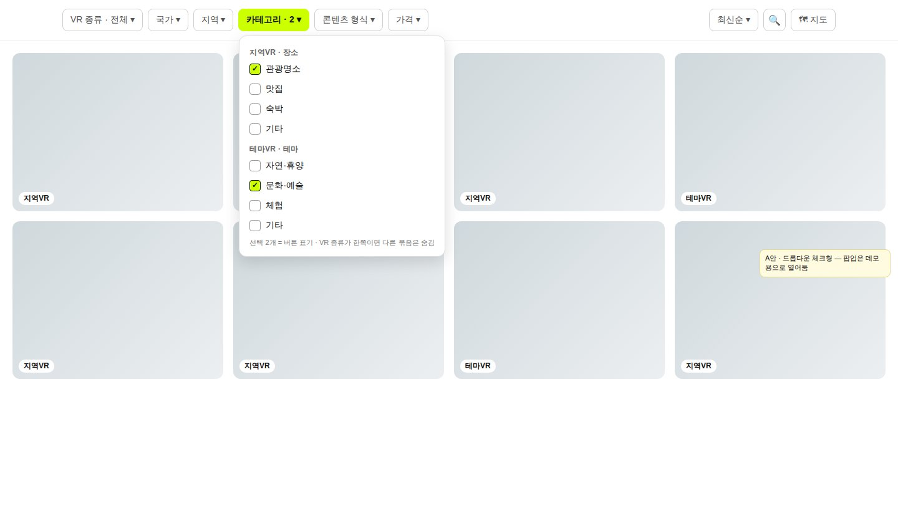
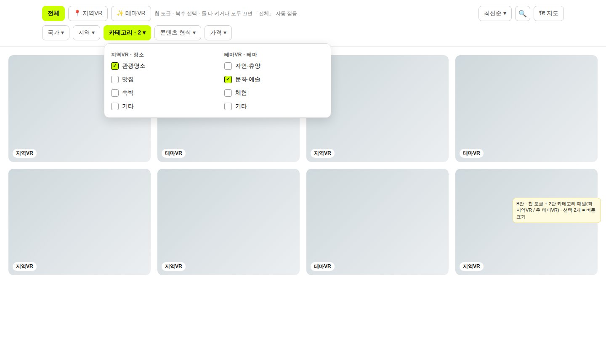
함께 정할 것: 「Etc 맨 아래」 = 묶음 각각 맨 아래(시안 그대로) / 합쳐서 전체 맨 아래 한 칸 · 카드 18713398
18713398
모바일(390px)에서는 두 안 모두 필터를 하단 시트 한 장에 모읍니다. 차이는 카테고리 묶음 표시 방식과 정렬 위치입니다.
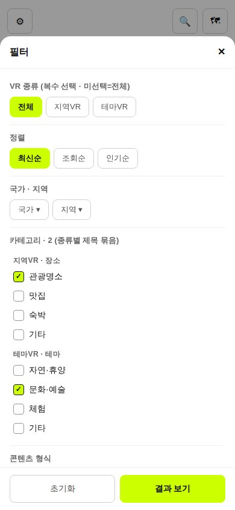
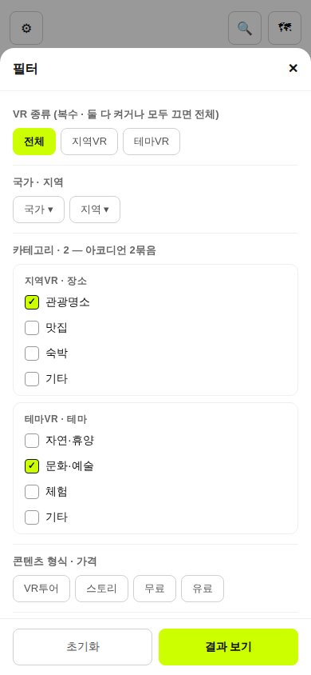
360 파노라마는 표시 없음 · flat 은 이미지 아이콘 · 360동영상은 기존 영상 배지 · AI 는 형식 아이콘 왼쪽. 현행 하단 바(16:9 · 제목 아래)에 가정 칸을 넣어 다시 만든 목업입니다.
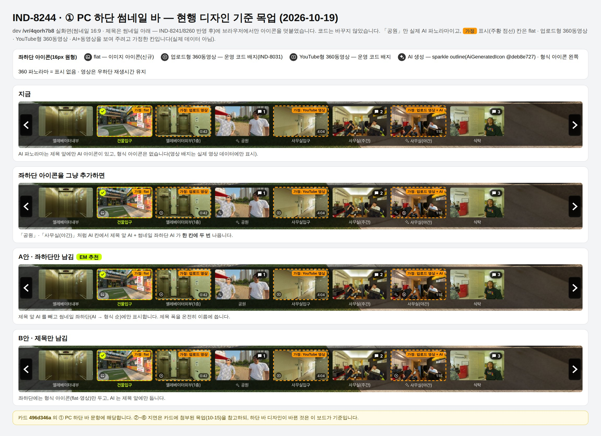
A안 = 썸네일 좌하단만 남김 · B안 = 제목만 남김. 기본 체크(★)가 EM 추천이며, 그대로 확정하면 바로 구현을 시작합니다(카드 496d346a).
496d346a
/vr-info
②에서 A안을 고르면 다음 장 AI 카드의 「VR 정보 탭 제목 위치」 질문은 필요 없어집니다. 두 카드를 함께 보고 답해 주십시오.
전부 AI 면 「AI」 배지 실선, 일부만 AI 면 일부 점선입니다. VR 화면 안에 떠 있던 AI 배지는 없앴고(오너 결정), 제목 칩·썸네일·VR 정보 탭에 아이콘을 넣었습니다.
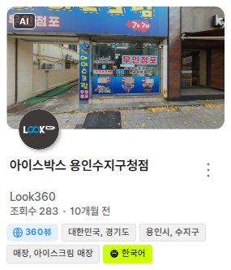
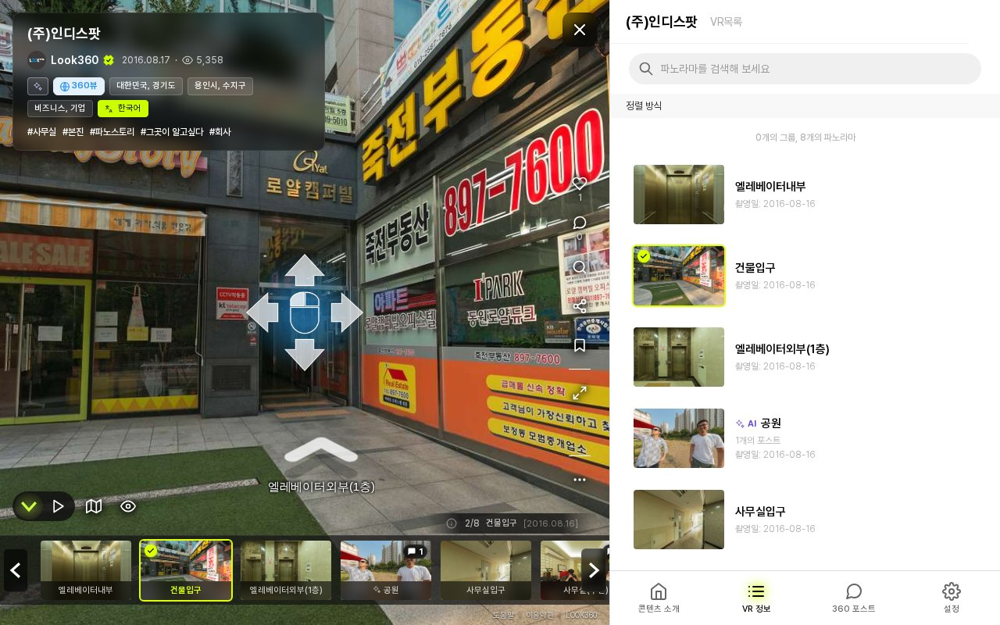
카드 8fa89948 의 질문입니다. 답이 나오면 화면의 앞/뒤 비교 토글을 걷어내고 고른 안만 남깁니다.
8fa89948
Section 05
지역 트리의 기준을 세우고, 유료 콘텐츠 판매 규칙을 오너 요구대로 뒤집었습니다.
해외 지역이 구글 지오코딩으로 그때그때 만들어져 나라마다 깊이가 제각각이었고(해외 19행), 서울에서 구를 고르면 저장이 안 됐습니다.
해외 지역 데이터는 ODbL 라이선스라 파생 데이터를 무료로 내려받을 수 있게 제공해야 합니다. 그래서 라이선스 페이지를 함께 만들었습니다(다음 장).
사이드메뉴 하단 「오픈소스 라이선스」로 들어갑니다. 데이터 출처(dr5hn ODbL) 1 · 웹 오픈소스 161 · 글꼴·아이콘 3 · 상용 2, 총 167개를 안내합니다. 한국어 외 언어에서는 영어로 나옵니다.
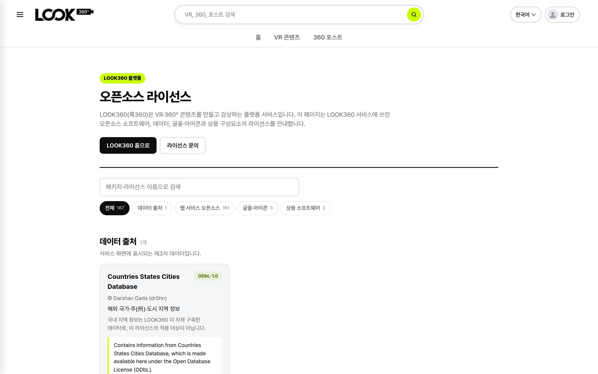
/files
.mp3)
지역·테마 동시 지정을 코드로 막지는 않습니다(오너 결정). 관리자 운영 규칙으로 관리합니다.
오너 요구(#14): 「유료는 리뷰를 항상 켜고, 무료·외부VR 은 기본 숨김. 유료→무료 전환은 관리자 포함 전원 막고, 0원은 100% 할인으로 표시.」 측정해 보니 기존 동작이 정반대였습니다.
작업 중 관람기록 화면이 전 사용자 500 이 되는 회귀가 한 번 있었고 즉시 복구했습니다. 관리자 화면 커밋(9f813bf)은 「몰아서 push」 대기입니다.
정가는 그대로 두고 할인가를 0 으로 한 테스트 콘텐츠입니다. 목록·상세·결제·구매내역·검색·채널·관람기록 카드에 같은 배지가 붙습니다.
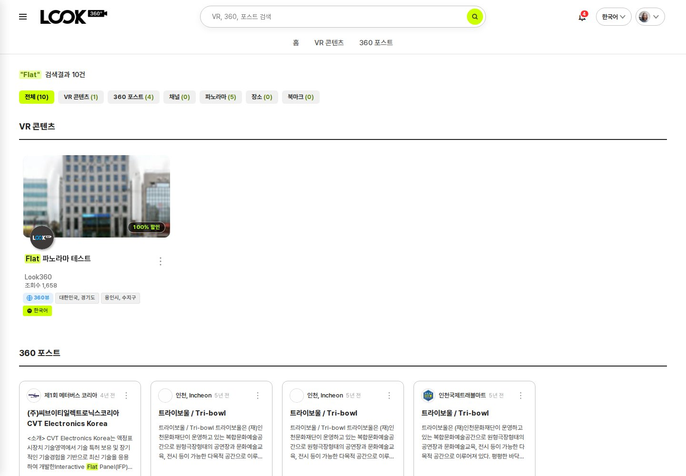
Section 06
애드센스 반려 원인을 찾아 정리하고, 같은 점검에서 나온 보안 구멍을 막아 모두 운영에 반영했습니다.
2026-08 사이트맵을 만들 때 의도하지 않은 스티커 독립 상세 페이지 5,371건(게시판 모듈 복제 잔재)이 제출돼 사이트맵 9,372 URL 의 57% 를 차지했습니다.
?c=sticker
진행 순서: 두 이슈 반영(완료) → Search Console 사이트맵 재제출(10/19 완료) → 스티커 색인 제외 확인 → 애드센스 재신청(아직 안 함). 재제출·재신청은 오너가 직접 합니다.
애드센스는 아직 재신청하지 않았습니다(승인 전). 순서: 「발견된 페이지」 약 4,001 확인(하루 안) → 「페이지」 보고서에서 스티커 URL 이 색인에서 빠지는지 3~7일 관찰 → 재신청. /rss.php 에 경로가 빈 링크 6건(404)이 있어 이후 정리 후보로 둡니다.
/rss.php
시작은 CloudFront 4xx 알람 조사(10/19)였습니다. 봇의 평점 조작 의심 요청(10/1~10/19 1,306건)은 전부 「로그인해 주세요」 화면이라 피해 0 으로 확인됐고, 대신 로그인 경로의 실제 결함을 찾았습니다. 위치 문의 등록(pano_request)은 비로그인 + 캡차로 계속 가능합니다.
$score
하지 않기로 한 것: 응답 코드 401/404 전환 · 중복 판정 유니크 키(스키마 변경) · WAF 규칙 · 평점 데이터 정리 · 좋아요한 하트 색칠(오너 결정). 4xx 알람은 같은 날 「404 전용 + 최소 트래픽 조건」으로 바꿔 야간 오탐을 줄였습니다. 남은 오너 판단: reCAPTCHA 비밀 키가 코드에 하드코딩된 문제.
Section 07
해외 사용자를 위한 소셜로그인을 운영에 열고, 실제로 나가지 않던 메일을 복구했습니다.
해외 이용 순위 기준으로 Google · X · Discord 를 도입했고(오너 결정), 오너가 직접 Facebook 까지 붙였습니다. 버튼은 PC 사이드바 로고 한 줄 + 로그인·가입 화면 전폭 버튼입니다.
weeklychart-login
X 는 크레딧 $0 상태에서도 로그인이 됐습니다. 로그인마다 크레딧이 빠지는지 X 콘솔 사용량을 지켜봐야 하고, 자동 충전 + 월 지출 상한을 함께 정해야 합니다(로그인 1회 약 $0.010 추정). 키는 Bitwarden 에 저장했습니다.
운영 VM 실측(10/19): 매일 09:00 크론이 「감지 + 메일만」으로 돌고 있습니다(10/12 결정). 서버 YouTube·AI 키가 비어 있고 yt-dlp 가 없어 삭제된 영상만 잡히고, 후보 탐색을 건너뛰어 승인 대기열은 늘 0곡입니다. 지금 받는 엑박 메일이 이 크론에서 나갑니다.
yt-dlp
10/19 오너가 운영 weeklykpop.com 사이드 패널 20행을 확인해 보니, 행마다 가수만 나오거나 곡만 나오거나 줄이 아예 없어 일관성이 없었습니다. 그래서 Q3(b) 규칙을 폐기하고 다시 정했습니다.
[가수]곡
[RESCENE]Pinball
[NCT WISH]Like A Dream
Please Be Happy
Kkun
IU
로컬 DB 실측: 곡 영문 값 중 LLM 번역이 4,151행으로 공식(iTunes) 3,162행보다 많습니다. 9/14 이후 로컬과 운영의 가수 매칭 데이터가 갈라져 있어 테이블 통째 재이관은 금지합니다(운영 신규 확정분 소실).
지금 운영은 「감지 + 메일만」 축소 모드라서 삭제된 영상만 잡힙니다. 오너 결정(10/19): 실제로 돌려 보고 판단한다 · 자동 승인은 코드 수정 QC 후 · 알림은 기존 메일을 개편해 통합.
--skip-find
API 판정을 켜는 첫날 엑박이 수천 곡 단위로 늘 수 있어 「첫 실행 규모 추정 · 요약형 메일 · 백로그 소진 계획」을 EM 에 함께 요청했습니다. 지난주 「키 발급 · 실판정 완료」는 dev QC 기준이며, 운영에는 아직 키가 들어가지 않았습니다.
Section 08
회사 계정을 안전하게 함께 쓰기 위한 비밀번호 금고(Vaultwarden) 사용 방법입니다. 지난번 공유한 「WireGuard 설치 · 터널 추가」를 마친 뒤의 단계만 다룹니다.
https://vault.look360.co.kr
192.168.0.x
이번 주 weekly(k)pop 소셜로그인 키(Discord·Google·X)도 이 금고에 저장했습니다.
오너 결정 대기 카드가 여러 에이전트에서 흩어져 올라오고, 확인을 부탁하는 카드에 어디서 확인할지가 빠지는 문제가 있어 규칙을 정리했습니다.
카드 발행 실적(전체 기간): EM 210장 · CEO 9장 외에 하위 에이전트가 BackendEngineer 176장 · Engineer 124장 등 직접 발행하고 있었습니다. 바꾼 지침 파일은 모두 백업을 남겼습니다.
위 4개 시안 카드(b54e37eb · 18713398 · 496d346a · 8fa89948)는 paperclip 이슈 스레드에 있습니다. 필터 카드 답이 VR 목록 화면 작업과 「전시회로 돌아가기」 다국어 작업을 함께 막고 있어 가장 먼저 처리하면 효과가 큽니다.
외부VR 분류 이슈 코멘트에 외부 점검자 계정 비밀번호가 평문으로 남아 있습니다. 삭제 후 Vaultwarden 으로 옮기는 것을 권합니다.
지난주 「매체 정지 전수 검사 대기」·「스토리 진행기 독립 QC 보류」 항목도 이번 주에 모두 종결했습니다(Section 03).
look360_v3_client
nestjs-look360-api
look360_platform_admin
Look360_ksq1.2
일일 점검 루틴 7건은 완료 수에서 제외했습니다. QC 이슈만 102건으로, 완료 작업의 약 30% 가 독립 검증입니다.
약관과 판매·지원 범위의 규칙을 바로 세우고, 레거시 운영의 열린 문을 닫은 7일이었습니다.
 포함하면 오토투어를 오래 틀어 둔 뒤 브라우저 뒤로가기로 VR 페이지를 나가기까지 누를 횟수가 늘어납니다(무한 순환).
포함하면 오토투어를 오래 틀어 둔 뒤 브라우저 뒤로가기로 VR 페이지를 나가기까지 누를 횟수가 늘어납니다(무한 순환).